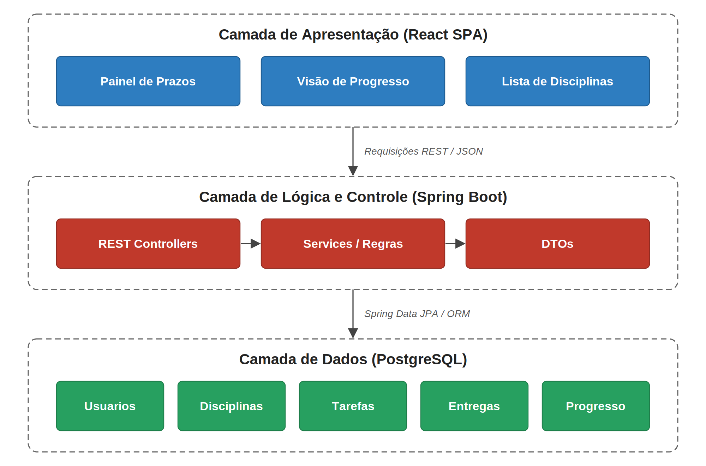
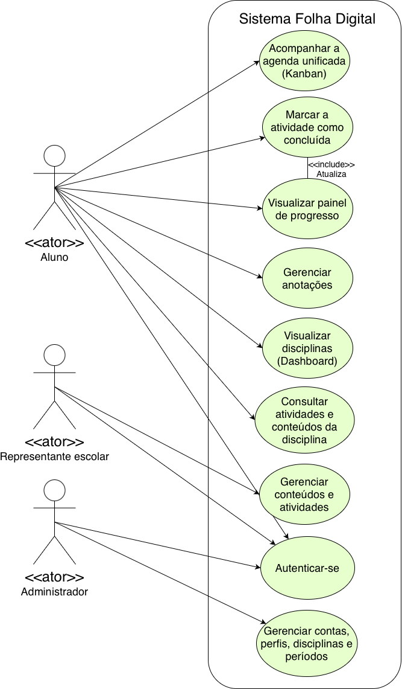
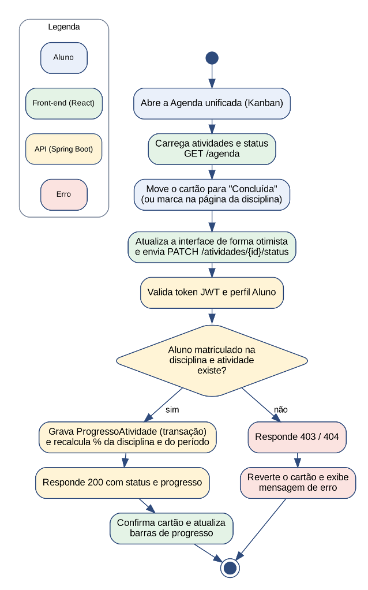
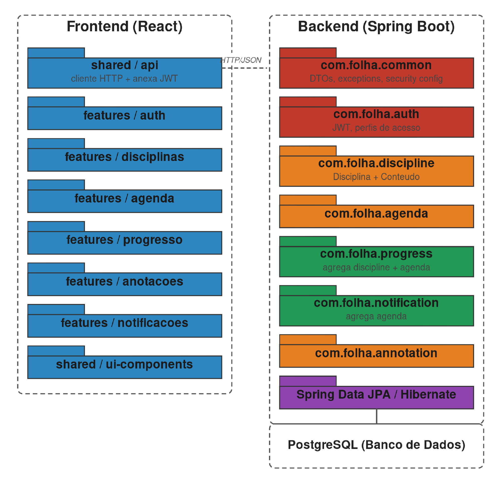
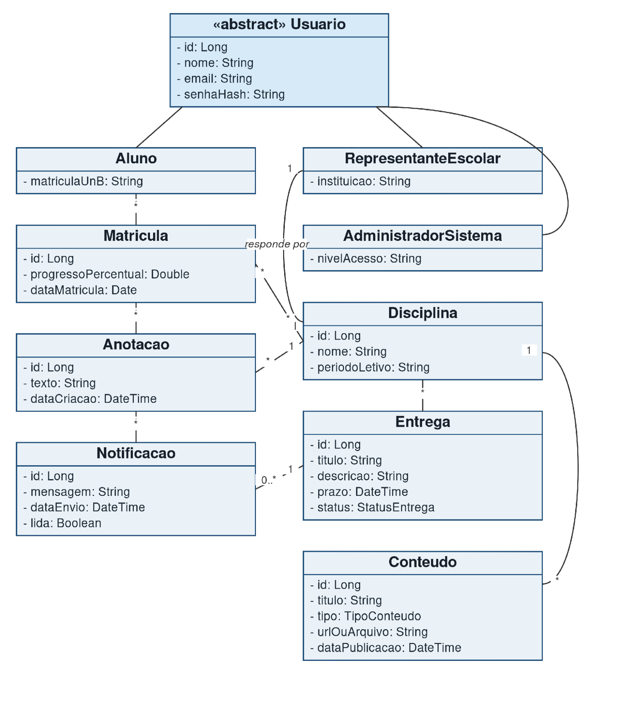
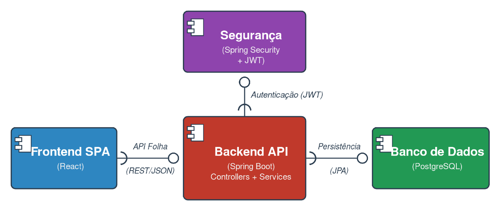
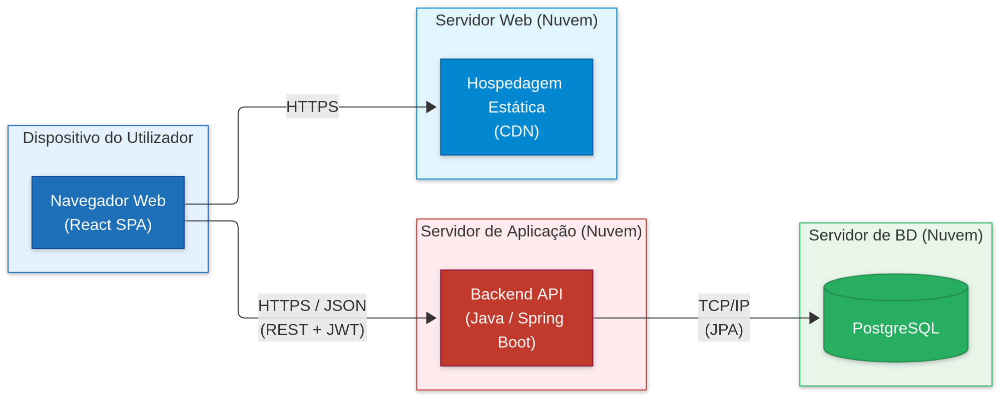

Documento de Arquitetura
Versão 1.0
Tabela - Integrantes do Grupo
| Matrícula | Nome | Função (responsabilidade) | Pontos de participação na elaboração |
|---|---|---|---|
| 232014692 | João Lucas R. Cabral | Designer/QA | 20 |
| 242015719 | Thiago Kauã de Sousa Cardoso | Desenvolvedor | 11,5 |
| 251036440 | Eduardo Viana Ribeiro da Silva | Product Owner/ Desenvolvedor | |
| 232024554 | Ana Jullia Barbara Mendes Lopes | QA/Scrum Master | |
| 232014469 | Jefferson de Souza Reis | Scrum Master | 12,5 |
| 241040341 | Pedro Henrique Galdino de Andrade Wollmann | Desenvolvedor | |
| 231036800 | Gustavo Linhares Lima | Desenvolvedor | |
| 242004967 | Pedro Lucas Souza Silva | Desenvolvedor | 20 |
Histórico de Revisões
| Data | Versão | Descrição | Autor(es) |
|---|---|---|---|
| 18/10/26 | 1.1 | Troca do nome do App | João Lucas/Ana Júlia |
1 INTRODUÇÃO
1.1 Propósito
Este documento descreve a arquitetura de software para a Plataforma de Ensino a Distância com foco em UX, desenvolvida pelo Grupo Torvalds no âmbito da disciplina de Métodos de Desenvolvimento de Software (MDS) no semestre de 2026.2. O objetivo é registrar e comunicar as decisões estruturais, organizacionais e tecnológicas do sistema, fornecendo um guia compreensível para desenvolvedores, testadores, PO e demais interessados no projeto.
1.2 Escopo
O detalhamento completo do escopo e requisitos encontra-se no Documento de Visão do Projeto. Em linhas gerais, o sistema consiste em uma aplicação web focada na experiência do usuário (UX) que visa resolver problemas de usabilidade no ambiente EaD, tais como a dificuldade de localização de conteúdos, acompanhamento de atividades, identificação de prazos e visualização do progresso acadêmico.
2 REPRESENTAÇÃO ARQUITETURAL
2.1 Definições
O sistema adota o estilo arquitetural Cliente-Servidor em Camadas, estruturado sob o padrão MVC (Model-View-Controller) com separação entre a aplicação frontend (Single Page Application - SPA) e o backend (API RESTful):
- Frontend (Apresentação/View): Desenvolvido em React.js, responsável pela renderização da interface e pela interatividade de baixo atrito.
- Backend (Lógica de Negócio e Controle/Controller e Service): Desenvolvido em Java com Spring Boot, responsável pela exposição de endpoints REST, regras de negócio e validações.
- Camada de Dados (Model/Persistência): Utiliza banco de dados relacional (PostgreSQL) gerenciado via Spring Data JPA / Hibernate.
2.2 Justifique sua escolha
A escolha por uma arquitetura em camadas desacoplada (REST API + SPA) fundamenta-se nos seguintes aspectos do projeto:
- Foco em UX (Requisito Central): A adoção do React.js (SPA) permite a navegação fluida sem recarregamento de página, garantindo o cumprimento da regra dos 3 cliques e o rápido acesso visual aos prazos.
- Separação de Responsabilidades (Baixo Acoplamento e Alta Coesão): Conforme os princípios da disciplina, isolar a interface visual da regra de negócio simplifica a manutenção, reduz impactos em mudanças e melhora a testabilidade.
- Adequação à Equipe: Permite a divisão de trabalho entre membros com foco em frontend e backend, minimizando conflitos de código no repositório.
2.3 Detalhamento
A comunicação entre os componentes ocorre de forma assíncrona por meio do protocolo HTTP/HTTPS utilizando o formato JSON como contrato de interface (Figura 1).
Figura 1 – Arquitetura em camadas do cAnCHA

Fonte: elaborado pelo grupo (2026)- Interfaces e Conectores: Os controllers do Spring Boot atuam como conectores que expõem endpoints REST protegidos por autenticação JWT.
Responsabilidades:
- View (React): Capturar interações do usuário e exibir dados processados de forma limpa.
- Controller (Spring REST): Mapear requisições HTTP, validar payloads de entrada e retornar respostas com códigos de status adequados.
- Service (Spring): Executar cálculos de progresso acadêmico, ordenação cronológica de prazos e aplicar regras do sistema.
- Repository / Model (JPA & Database): Garantir a persistência e integridade relacional dos dados.
2.4 Metas e restrições arquiteturais
- Desempenho: 95% das consultas ao painel de prazos e progresso devem ser respondidas em até 2,0 segundos.
- Usabilidade / Arquitetura de Informação: A estrutura de rotas deve garantir acesso a qualquer conteúdo principal em até 3 cliques.
- Padrões de API: Adoção rigorosa do padrão RESTful (utilização correta dos verbos GET, POST, PUT, PATCH, DELETE e códigos HTTP).
- Padrão de Codificação: Seguir o Google Java Style Guide no backend e padrões ESLint / Prettier no frontend.
- Segurança: Autenticação e autorização via tokens JWT com transmissão criptografada.
- Testabilidade: Meta de cobertura de testes unitários e de integração ≥ 80% no backend e ≥ 70% no frontend.
2.5 Visões
As visões a seguir comunicam a arquitetura sob quatro pontos de vista: uso (escopo do sistema), organização lógica (módulos e camadas), estrutura (classes e componentes) e implantação (ambiente de execução).
2.5.1 Visão uso
O Aluno consulta disciplinas, atividades, agenda e progresso e registra anotações; o Representante Escolar publica conteúdos e atividades; e o Administrador mantém contas, perfis, disciplinas e períodos. A Figura 2 apresenta o diagrama de casos de uso.
Figura 2 – Diagrama de casos de uso do cAnCHA

Fonte: elaborado pelo grupo (2026)A funcionalidade mais complexa do ponto de vista arquitetural é marcar uma atividade como concluída e atualizar o progresso (CEN-04), pois atravessa todas as camadas: a interface, a autorização na API, a regra de negócio, a transação no banco e o recálculo dos indicadores exibidos ao aluno. A Figura 3 mostra seu diagrama de atividades.
Figura 3 – Diagrama de atividades – marcar atividade como concluída e atualizar o progresso (CEN-04)

Fonte: elaborado pelo grupo (2026)Quadro 1 – Requisitos que influenciaram a arquitetura
| Requisito | Decisão arquitetural motivada |
|---|---|
| REQ-02 – Navegação rasa (regra dos 3 cliques) | SPA com roteamento no cliente, dados carregados sob demanda e dashboard de disciplinas como tela inicial. |
| REQ-04 e REQ-05 – Agenda unificada e painel de progresso | Módulos de agenda e de progresso no servidor, que agregam dados de todas as disciplinas em uma única chamada, evitando várias requisições a cada tela. |
| REQ-07 – Integração Front-end/API | API REST com contrato documentado e atualização dos dados no cliente (MR-03). |
| Perfis do Quadro 4 (Administrador, Aluno, Representante) | Autenticação por JWT e autorização por perfil em middlewares da camada de API. |
| Equipe de oito integrantes, sprints semanais e risco de tecnologias novas | Estilo em camadas e back-end como monólito modular, com módulos independentes que podem ser desenvolvidos em paralelo. |
| Estratégia de testes (Seção 6) | Camadas com responsabilidades isoladas, que permitem testes unitários nos services e de integração na API. |
Fonte: elaborado pelo grupo (2026)
2.5.2 Visão de organização lógica
O sistema Folha é subdividido em módulos funcionais, cada um implementado como um pacote Java no backend (padrão package-by-feature, com Controller, Service e Repository próprios) e um módulo correspondente no frontend (pasta de feature em React). Essa organização reduz o acoplamento entre funcionalidades distintas e facilita a divisão de trabalho entre os integrantes da equipe (Seção 2.2 do Documento de Visão). A Figura 4 apresenta o diagrama de pacotes, com a organização desses módulos e suas dependências.
Módulos do sistema e sua razão lógica:
Quadro 2 – Módulos do sistema Folha e sua razão lógica. Fonte: elaborado pela equipe (2026).
| Pacote (Backend) | Módulo (Frontend) | Responsabilidade / razão lógica |
|---|---|---|
| com.folha.auth | features/auth | Autentica o usuário (login) e emite/valida os tokens JWT, controlando os três perfis de acesso definidos no Documento de Visão (Aluno, Representante Escolar e Administrador do Sistema). Centraliza a regra de segurança para que os demais módulos não precisem reimplementá-la. |
| com.folha.discipline | features/disciplinas | Gerencia as disciplinas do aluno (abas por matéria) e o Conteudo associado a elas (materiais, PDFs, links); é o módulo central da metáfora do caderno físico que dá nome ao produto. A escrita de Conteudo é reservada ao perfil Representante Escolar, hoje fora do MVP validado pela pesquisa do grupo (Seção 1.1 do Documento de Visão) — ver estratégia de provisionamento abaixo. |
| com.folha.agenda | features/agenda | Consolida os prazos e entregas de todas as disciplinas em uma agenda única, em estilo kanban, atacando diretamente o problema de fragmentação de ferramentas identificado no Documento de Visão. |
| com.folha.progress | features/progresso | Calcula e expõe o percentual do semestre concluído e as atividades pendentes do aluno; não possui persistência própria, pois agrega dados dos módulos discipline e agenda. |
| com.folha.annotation | features/anotacoes | Mantém as anotações do aluno vinculadas a disciplinas, funcionalidade secundária de apoio definida no Documento de Visão. |
| com.folha.notification | features/notificacoes | Gera e envia lembretes automáticos de prazos próximos, agregando dados do módulo agenda. |
| com.folha.common | — | Pacote transversal com DTOs, tratamento de exceções e configuração de segurança compartilhados por todos os módulos. |
Fonte: elaborado pelo grupo (2026)
Comunicação entre os módulos (interfaces): no frontend, todos os módulos de feature consomem a API REST do backend por meio de um cliente HTTP único (shared/api), responsável por anexar o token JWT a cada requisição. No backend, a comunicação entre frontend e módulos ocorre via endpoints REST (JSON sobre HTTPS), conforme detalhado na Seção 2.3. Internamente, os módulos progress e notification não acessam diretamente os repositórios de outros módulos — eles dependem apenas das classes de Service de discipline e agenda, preservando o encapsulamento: cada módulo expõe somente sua camada de Service como interface para os demais, evitando o acoplamento direto entre camadas de persistência de módulos distintos.
Estratégia de provisionamento de conteúdo: Disciplina e Conteudo são modeladas como entidades persistentes desde a primeira versão da arquitetura, com Controller, Service e Repository completos em com.folha.discipline — a escrita não é um recurso remendado depois, é parte do desenho original do módulo. Como a pesquisa do grupo (Seção 1.1 do Documento de Visão) investigou exclusivamente a experiência do Aluno, o MVP popula o Conteudo exibido por meio de uma carga inicial de dados (seed/migration com Flyway), sem exigir login nem interface do Representante Escolar. Os endpoints de escrita (POST/PUT/DELETE) já estão previstos no Controller, protegidos por controle de acesso baseado em papel (Spring Security, via @PreAuthorize("hasRole('REPRESENTANTE_ESCOLAR')")); caso o escopo do projeto seja ampliado para incluir esse perfil, habilitar a publicação de conteúdo não exige qualquer alteração nas camadas de Service e Repository, apenas a liberação do fluxo de autenticação e da interface de escrita já previstos nesta arquitetura.
Figura 4 – Diagrama de pacotes do sistema Folha: organização dos módulos em frontend e backend e suas dependências

Fonte: elaborado pelo grupo (2026)2.5.3 Visão estrutural
Esta seção detalha os elementos internos do sistema Folha, tanto do ponto de vista dos dados manipulados (diagrama de classes) quanto da composição em unidades executáveis e suas interfaces (diagrama de componentes).
O diagrama de classes (Figura 5) representa o modelo de domínio do sistema. A classe abstrata Usuário concentra os atributos comuns de identificação e autenticação, sendo especializada (generalização) nos três perfis de acesso definidos no Documento de Visão: Aluno, RepresentanteEscolar e AdministradorSistema. Um Aluno se matricula em uma ou mais Disciplina por meio da classe de associação Matrícula, que registra o progressoPercentual individual do aluno naquela disciplina — dado consumido pelo módulo progress (Seção 2.5.2). Cada Disciplina é de responsabilidade de um RepresentanteEscolar e agrega, por composição, suas Entrega (atividades/prazos), que deixam de existir caso a disciplina seja removida. Da mesma forma, Disciplina agrega seus Conteudo (materiais de estudo, com atributos de tipo e urlOuArquivo) — classe deliberadamente separada de Entrega, já que um material de apoio não tem prazo nem status; a escrita dessa composição é protegida pelo mesmo controle de acesso por papel discutido na Seção 2.5.2 (Representante Escolar). O Aluno pode registrar Anotacao vinculadas a uma Disciplina e recebe Notificacao geradas a partir de uma Entrega próxima do prazo.
Figura 5 – Diagrama de classes do domínio do sistema Folha

Fonte: elaborado pelo grupo (2026)O diagrama de componentes (Figura 6) mostra a composição do sistema em unidades executáveis de alto nível e as interfaces entre elas, refletindo a arquitetura em camadas definida na Seção 2.1. O componente Frontend SPA (React) requer a interface API Folha (REST/JSON), provida pelo componente Backend API (Spring Boot), que concentra os Controllers e Services dos módulos descritos na Seção 2.5.2. O Backend API, por sua vez, requer a interface Autenticação (JWT), provida pelo componente Segurança (Spring Security + JWT), responsável por validar o token e aplicar o controle de acesso baseado em papel — por exemplo, restringir a escrita em Disciplina/Conteúdo ao perfil Representante Escolar (Seção 2.5.3) — antes que a requisição alcance os Controllers. Por fim, o Backend API requer a interface Persistência (JPA), provida pelo componente Banco de Dados (PostgreSQL), isolando as regras de negócio dos detalhes de armazenamento.
Figura 6 – Diagrama de componentes do sistema Folha

Fonte: elaborado pelo grupo (2026)2.6 Visão de Implantação
O software Folha Digital será implantado em um ambiente de nuvem (Cloud Platform), garantindo que a aplicação seja acessível via internet a partir de diferentes dispositivos e navegadores, sem exigir qualquer tipo de instalação por parte do usuário. A infraestrutura de hardware em nuvem será dividida para suportar a arquitetura Cliente-Servidor em Camadas (desacoplada), separando a entrega estática da interface, o processamento de regras de negócio e a persistência de dados. Esse processo será suportado por pipelines de Integração Contínua (CI) e entrega contínua configurados diretamente no GitHub.
A implantação do software será estruturada segundo as seguintes tecnologias: Servidor de Frontend (Apresentação): A interface da aplicação será hospedada em um servidor web ou serviço de CDN otimizado para aplicações estáticas, executando o código desenvolvido em React.js (Single Page Application - SPA). Justificativa: Essa escolha é fundamentada no foco central em UX do projeto, pois a abordagem SPA permite uma navegação fluida e sem recarregamento de páginas, sendo essencial para cumprir a regra arquitetural e de usabilidade de permitir o acesso a qualquer conteúdo principal em até 3 cliques. Servidor de Aplicação (Backend / API): O backend será implantado em um servidor de aplicação capaz de executar a máquina virtual Java (podendo operar tanto em ambiente Linux quanto Windows) para rodar o framework Spring Boot. Justificativa: Essa tecnologia foi escolhida por permitir a separação clara de responsabilidades (baixo acoplamento e alta coesão), garantindo a exposição segura de endpoints RESTful comunicados via JSON (HTTPS) e protegidos por autenticação de tokens JWT. Servidor de Banco de Dados: A persistência utilizará um servidor dedicado executando o banco de dados relacional PostgreSQL. Justificativa: A escolha por um modelo relacional garante a integridade dos vínculos entre entidades complexas do domínio (usuários, disciplinas, tarefas, entregas e progresso), sendo facilmente gerenciada e mapeada pela aplicação através das bibliotecas Spring Data JPA e Hibernate.
Diagrama de Implantação
Abaixo apresenta-se o diagrama de implantação ilustrando a distribuição física e topológica do sistema:
Figura 7 – Diagrama de implantação da plataforma cAnCHA

Fonte: elaborado pelo grupo (2026)A Figura 7 ilustra a arquitetura de implantação física e lógica da plataforma Folha Digital. O ambiente é estruturado em três camadas principais: a interface do utilizador (Frontend em React SPA), o servidor de aplicação (Backend REST API em Spring Boot) e a camada de persistência de dados (PostgreSQL). As comunicações entre o dispositivo do utilizador e os serviços em nuvem são efetuadas através de conexões seguras HTTPS com autenticação via tokens JWT, garantindo a integridade e a segurança no tráfego de dados.
2.7 Restrições adicionais
2.7.1 Restrições negociais e de acesso
O sistema Folha Digital será acessível via internet, porém exige autenticação para acesso às funcionalidades, não havendo uso anônimo. A autenticação é realizada por meio de tokens JWT. O controle de acesso é baseado em três perfis distintos: Administrador, Aluno e Representante Escolar. Cada perfil possui permissões específicas, e as funcionalidades disponíveis devem respeitar essas restrições, evitando que um usuário realize operações que não correspondem às suas responsabilidades.
2.7.2 Características de qualidade
Usabilidade: é o requisito central. Como o público-alvo inclui usuários com diferentes níveis de conhecimento tecnológico, a arquitetura de informação precisa ser simples e direta. Por isso, a estrutura de rotas deve garantir acesso a qualquer conteúdo principal em até 3 cliques, reduzindo a profundidade de navegação que motivou o desenvolvimento do sistema.
Desempenho: o sistema deverá garantir que 95% das consultas relacionadas aos prazos e ao painel de progresso sejam respondidas em até 2,0 segundos, proporcionando maior agilidade na consulta das informações acadêmicas.
Testabilidade: como o projeto adota integração contínua e Definition of Done, a arquitetura deve permitir a realização de testes unitários, de integração e de sistema. A meta é de cobertura mínima de 80% no backend e 70% no frontend.
Portabilidade: o sistema deve ser acessível a partir de diferentes dispositivos e sistemas operacionais, sem exigir instalação. O frontend deve funcionar nos principais navegadores, e o backend deve ser executável tanto em ambiente Linux quanto Windows.
Segurança: a comunicação entre frontend e backend deve ocorrer via HTTPS, protegendo os dados transmitidos. A autenticação é feita por tokens JWT, que são validados a cada requisição. O acesso às funcionalidades é controlado pelo perfil do usuário, garantindo que operações restritas não sejam acessadas por quem não tem permissão.
2.7.3 Restrições técnicas
O sistema adota uma arquitetura em camadas desacoplada (REST API + SPA), com frontend em React.js e backend em Java com Spring Boot, utilizando banco de dados relacional PostgreSQL. A comunicação entre os componentes ocorre via HTTP/HTTPS, com JSON como contrato de interface. A organização em módulos segue o padrão package-by-feature no backend e pastas de feature no frontend.
REFERÊNCIAS
BASS, Len; CLEMENTS, Paul; KAZMAN, Rick. Software architecture in practice. 4. ed. Boston: Addison-Wesley, 2021.
META PLATFORMS. React documentation. Disponível em: https://react.dev. Acesso em: 7 out. 2026.
POSTGRESQL GLOBAL DEVELOPMENT GROUP. PostgreSQL documentation. Disponível em: https://www.postgresql.org/docs/. Acesso em: 7 out. 2026.
SPRING. Spring Boot reference documentation. Disponível em: https://docs.spring.io/spring-boot/. Acesso em: 7 out. 2026.